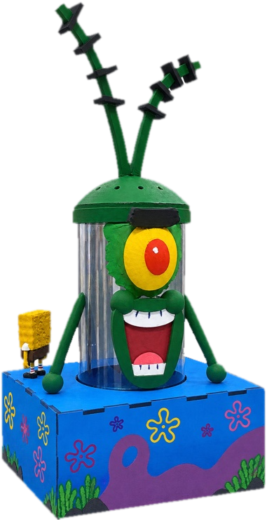

1
Inóculo
Uma pequena amostra de algas é colocada no meio de cultivo, com nutrientes.
Conheça o Earth Link: um reator de algas inspirado nos microrganismos que sustentam os ecossistemas oceânicos e produzem boa parte do oxigênio que respiramos.
O reator é um recipiente projetado para manter condições adequadas ao cultivo de algas. No projeto, ele permite observar como luz, temperatura e pH influenciam o crescimento.
A ideia do Earth Link é aproximar tecnologia e sustentabilidade, apresentando uma alternativa para estudar organismos essenciais aos ecossistemas.
Uma pequena amostra de algas é colocada no meio de cultivo, com nutrientes.
Luz, temperatura e pH são mantidos dentro de uma faixa adequada.
Pela fotossíntese, as algas absorvem CO₂, liberam O₂ e multiplicam a biomassa.
Os dados são acompanhados para entender o que ajuda ou atrapalha o cultivo.
Escolha um cenário ou mexa nos controles, aperte play e veja as algas crescerem. Dá pra desbloquear 6 conquistas!
Cenários rápidos
Chegue a 95% e faça o Plankton gargalhar!
Conquistas 0/6
Vamos salvar o plano!
Mexa nos controles.Modelo didático simplificado (curva logística), não são medições reais.
Acompanhamento do crescimento das algas e da temperatura do reator.
Evolução do crescimento das algas nos quatro primeiros dias de cultivo.
Estabilidade da temperatura do reator nos quatro primeiros dias.
O reator do Earth Link no formato do Plankton, o mascote do projeto.

Toque em uma função para ver onde ela fica no reator.
Uma visão geral da proposta Earth Link.
Apresentar um reator de algas como proposta educativa, ligada à biotecnologia e à sustentabilidade.
O cultivo pode ser estudado observando fatores como luz, temperatura, pH e o crescimento das algas.
Conte como você imagina o reator e quais seriam suas necessidades.
Preencha o formulário para preparar uma mensagem sobre a encomenda.
E-mail para contato:
contato@earthlink-projeto.com.brAo enviar, seu aplicativo de e-mail será aberto com as respostas preenchidas.